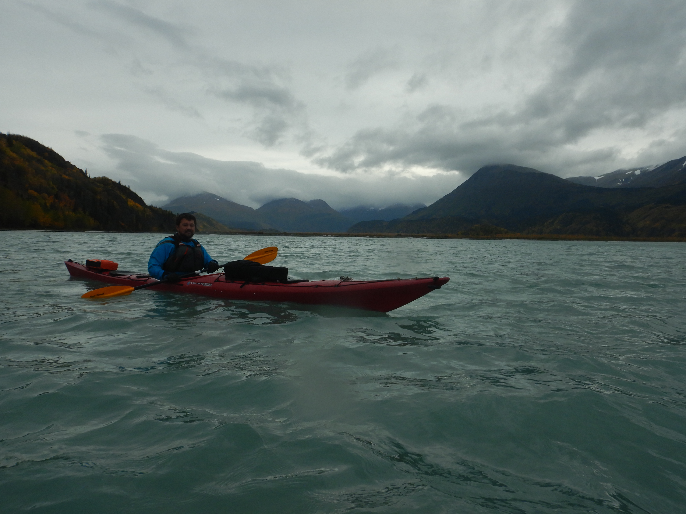
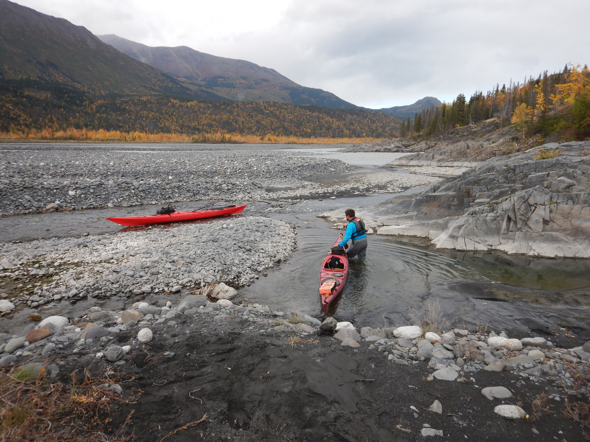
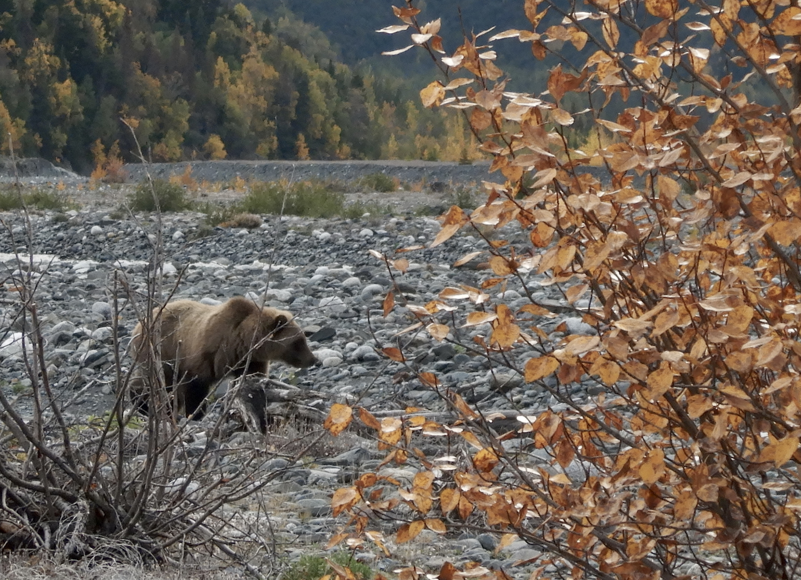

In late September 2022, a friend from my UAF undergraduate times Justin and I embarked on a three-night sea kayak trip out of Whittier. Unfortunately we didn’t get farther than the Lazy Otter, a nice coffee shop by the city boat harbor. High winds and waves pelted the windows as whitecaps rolled by, a force in equal measure to the angry glares of boat captains chastising us for daring to consider using such crafts. “DON’T DO IT!” shouted one from across a row of parked seiners upon seeing our boats prepped with gear. “Boy I’m not looking forward to being out there today even in my 40 ft skiff,” commented another.
We considered our choices: drink six more cappuccinos at the Lazy Otter and wait for a break in the weather, or dream up some other adventure like heading back to Anchorage to take over the pirate ship at H2Oasis. Opting away from chlorine and screaming children we headed two hours further down the road to Skilak Lake, an inland jewel of a lake mid-way down the Kenai River. We had three days to explore and aimed our sights towards visiting nearby Skilak Glacier.

I had always wanted to get to know this area of the Kenai River better. In research I had been involved with at UAF, my colleagues and I sometimes used the fate of Skilak Glacier and the lake at it’s toe as an example of the complex blend of pros and cons when it comes to a warming world and what it means for salmon habitat (Schoen et al. 2017). Yes, the glacier has receded substantially in the last century; and as a result a new lake has formed in it’s slow wake. At the same time, this new lake potentialy serves as new juvenile sockeye rearing habitat. I encourage those interested to check out the interactive graphic slider to see what I mean (click the image below or go to https://ak-nsf-epscor.github.io/kenai-change/skilakGlacierChange.html).
It was a calm paddle from the Upper Skilak boat launch across the lake towards Skilak River. On reaching the mouth of the river we discovered that sea kayaks were no match for the force of this relatively short glacial run. We stepped out onto the braided shore and lined the boats upstream from that point on.
Lining sea kayaks up a fast glacial stream for a whole day is a fairly absurd choice for the average adventure. Justin is no average adventurer; having covered wide swaths of Alaska and the Great Lakes in a kayak over many journeys of multiple months each. This seemed normal, a walk in the park. For anyone else considering this route, hiking with packrafts is probably the way to go.

Our camp site on the second night ~4 miles upstream from the lake offered just a peek of the massive glacier around the corner. We decided to hike sans boats the rest of the up to the source the next day.
Starting out on our stroll, we encountered a trio of grizzlies galloping purposefully somewhere in the opposite direction of us. We crossed paths from a distance like two groups of pedestrians on opposite sidewalks.

A few more miles of open-country walking along the river bank brought us to Skilak Lake. It was a neat experience to visit in-person this lake that I had spent a lot of time thinking about in school.